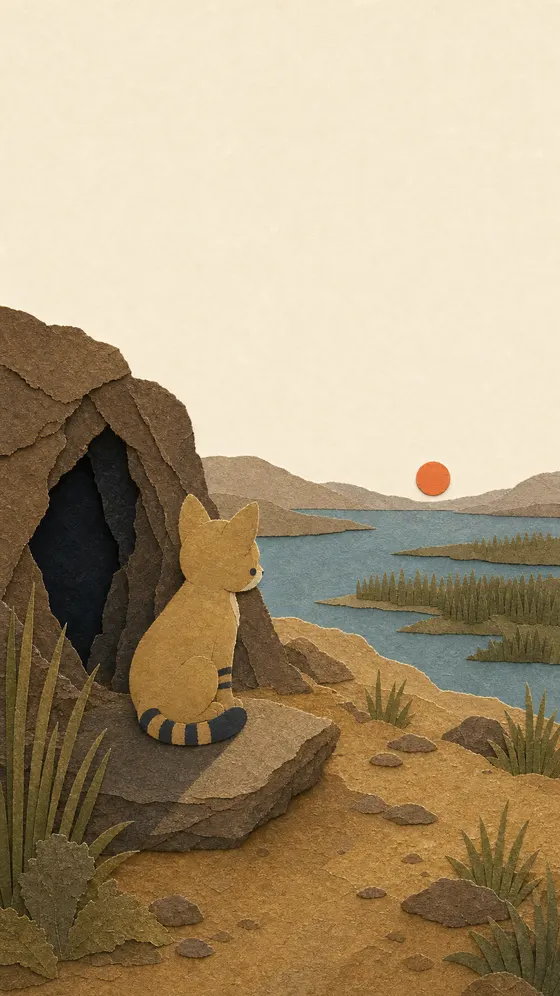

อุ้งเท้าป่าสุดท้ายThe Last Wild Paw
ลูกแมวป่าที่สูญเสียครอบครัว ต้องเรียนรู้จะอยู่ลำพัง จนกลิ่นควันพาเขามาพบผู้คนหลังกองไฟ A wildcat kitten loses his family and learns to live alone, until smoke leads him to the people beyond the fire.
ดูได้แล้วOut now